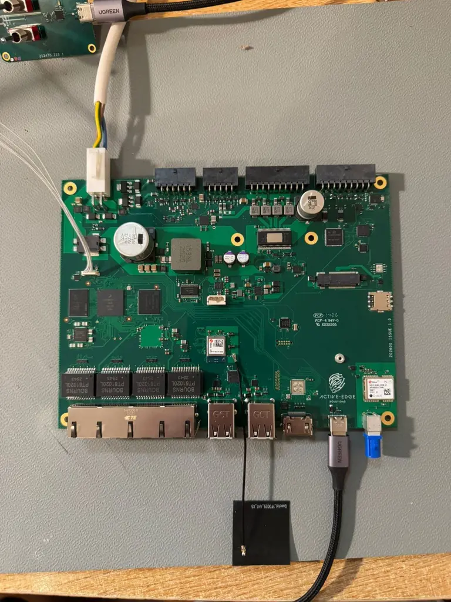

Insights · 30th April 2026
Ten prototypes to secure Linux in about ten minutes.
The first boot of a custom board is where reusable platform work either pays back or turns out to have been a slide. This industrial gateway came up on our maintained Linux path almost immediately.

This was a result I was genuinely proud to share: a new industrial gateway focused on CAN, mobile connectivity and audio, built as a fast response to a customer need.
Custom did not mean starting again
The board was a modification of our core NXP i.MX8M Mini platform. That distinction matters. The interfaces and layout changed for the programme, but the processor architecture, board-software knowledge, secure delivery path and application pattern already existed.
We produced ten prototypes. Within about ten minutes of starting the software bring-up we had flashed our customised Foundries.io Yocto Linux image. The board booted, the NXP IW612 wireless component came to life and the device registered with the Foundries platform.
The application had already moved
The customer application was not waiting for the custom PCB. It had already been ported into a Docker environment and exercised on our standard evaluation platform. When the new hardware arrived, the application layer and the platform layer met rather than beginning together from zero.
That separation is one of the practical reasons to use containers on embedded Linux. It does not eliminate hardware dependencies, but it allows useful application work to proceed while the programme-specific board is being manufactured.
Security was part of the image
The software path included secure boot and security-focused over-the-air delivery, designed toward UK RED and Cyber Resilience Act requirements. Those concerns were not deferred until after the prototype worked.
A product that connects to the internet needs a controlled way to establish what is running, deliver fixes and maintain evidence across its lifetime. Building that into the platform makes it available to the custom variant from its first useful boot.
What the ten minutes really represented
The ten-minute result was not ten minutes of engineering. It was the visible return on more than five years of platform work: board support, build infrastructure, update delivery, container patterns and the discipline to reuse them.
That is the commercial point of a reusable embedded platform. It is not that every product becomes identical. It is that programme-specific engineering starts from a foundation that has already earned trust.